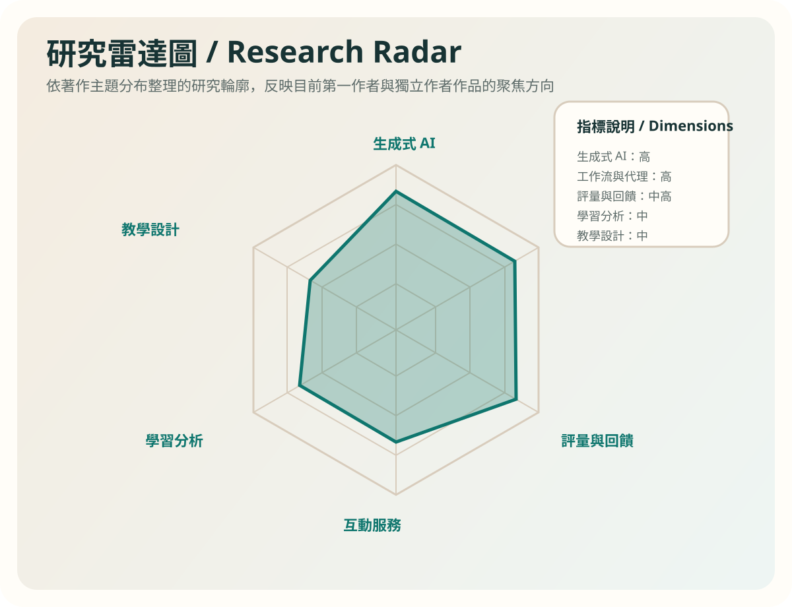
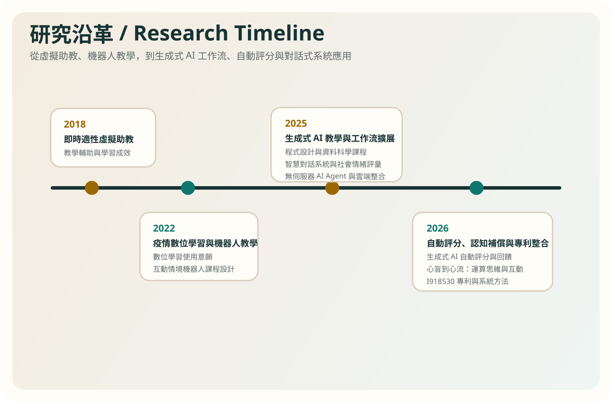

First-Author Works
施育廷第一作者與獨立作者著作專區
本專區整理施育廷作為第一作者或獨立作者的著作，包含專利、研討會論文發表與期刊論文，並以中英文網頁、研究關聯圖、研究雷達圖、研究沿革與 APA 格式清單方式呈現。
本頁整合既有研究成果頁與新增的著錄資訊，讓代表性著作、研究主題與發展脈絡可以在同一個學術展示頁中被閱讀。
First-Author Works
本專區整理施育廷作為第一作者或獨立作者的著作，包含專利、研討會論文發表與期刊論文，並以中英文網頁、研究關聯圖、研究雷達圖、研究沿革與 APA 格式清單方式呈現。
本頁整合既有研究成果頁與新增的著錄資訊，讓代表性著作、研究主題與發展脈絡可以在同一個學術展示頁中被閱讀。

Featured Output
以專利作為代表成果，連結後續生成式 AI 教學、對話式介面、自動評分與工作流整合的研究發展。
施育廷（2026）。基於對話式介面之多源資訊整合與自動化內容生成之系統與方法（I918530）。中華民國經濟部智慧財產局。
這項專利可視為施育廷研究主線的系統化代表成果，將對話式介面、多來源資料、內容生成與自動化流程整合為可實作的方法架構，也與後續 AI 教學、評量回饋、代理人服務與工作流設計研究相互呼應。


Works
以下依年份與主題整理施育廷第一作者或獨立作者著作。已有詳細頁面者直接連至既有成果頁，其餘則在本頁保留正式著錄與重點說明。
施育廷、張敦程（2026年5月20日）。2026 ICEET數位學習與教育科技國際研討會，臺北，臺灣。
聚焦於生成式 AI 自動評分與回饋系統的滿意度、需求與使用接受情形，延伸施育廷在教育 AI 評量回饋系統上的研究主線。
開啟成果頁施育廷、林育慶（2026年5月15日）。2026年工程、技術與STEM教育學術研討會，臺中，臺灣。
以學習工作流為焦點，分析輕量級無伺服器 AI 代理人在教學與學習任務中的整合方式與成效。
開啟成果頁施育廷、李政軒（2026年3月5日-6日）。第二十一屆台灣數位學習發展研討會，南投，臺灣。
結合運算思維與生成式 AI 互動，探討認知補償、學習支持與互動效益，延伸到人機互動與學習分析視角。
開啟成果頁施育廷、張敦程（2026年6月6日）。【論文發表】。臺南，臺灣。
依目前提供資料保留此發表紀錄。由於題名尚未提供，本頁先以著錄形式納入整體學術成果脈絡。
施育廷、李政軒（2025年10月31日-11月2日）。APERA-TERA2025 International Conference，高雄，臺灣。
將 AI 代理人與教學工作流、學習效率優化相連結，呈現伺服器輕量化與教育現場整合的研究方向。
開啟成果頁施育廷、王煒豪、李政軒（2025年10月24日-25日）。2025中國測驗學會年會，臺南，臺灣。
將對話式系統延伸到心理與社會情緒評量應用，連接 AI 互動服務與評量研究。
開啟成果頁Shih, Y.-T., Tseng, C.-J., Chang, M.-H., & Kuo, C.-L. (2025, October 10-12). TANET 2025, Yilan, Taiwan.
由傳統語意分析延伸至雲端教育自動化情境中的生成式 AI、資安與隱私議題，呈現技術轉型與風險意識。
開啟成果頁施育廷、李政軒（2025年6月4日）。ICEET 2025 數位學習與教育科技國際研討會，臺北，臺灣。
分析學生在 AI 輔助程式設計與資料分析學習中的互動行為，是學習分析與生成式 AI 教學研究的重要節點。
開啟成果頁施育廷（2025年5月24日）。2025 第六屆台灣商業教育與管理學術研討會，臺南，臺灣。
以獨立作者形式探討不同介入週數對非資訊背景大學生學習成效的影響，聚焦教學設計與長時程導入效果。
開啟成果頁Shih, Y.-T., Li, C.-H., & Chen, H.-R. (2025, January 10-12). 6th International Conference on Advances in Education and Information Technology, Fukuoka, Japan.
關注程式設計課程中 AI 整合對學習成效與焦慮降低的影響，是施育廷早期生成式 AI 教學應用的重要國際發表之一。
開啟成果頁施育廷、楊芷瑄、陳怡靜、蕭凱峻、陳鴻仁（2022年12月9日）。台灣教育傳播暨科技學會 2022 年國際學術研討會，臺北，臺灣。
討論疫情情境下翻轉學習模式與數位學習使用意願之間的關係，呈現研究主線中較早期的數位學習接受度議題。
施育廷、陳鴻仁（2018年3月23日-24日）。第十三屆台灣數位學習發展研討會，臺中，臺灣。
以虛擬助教與學習成效分析為核心，代表施育廷研究沿革中較早期的對話式教學輔助與適性支持主題。